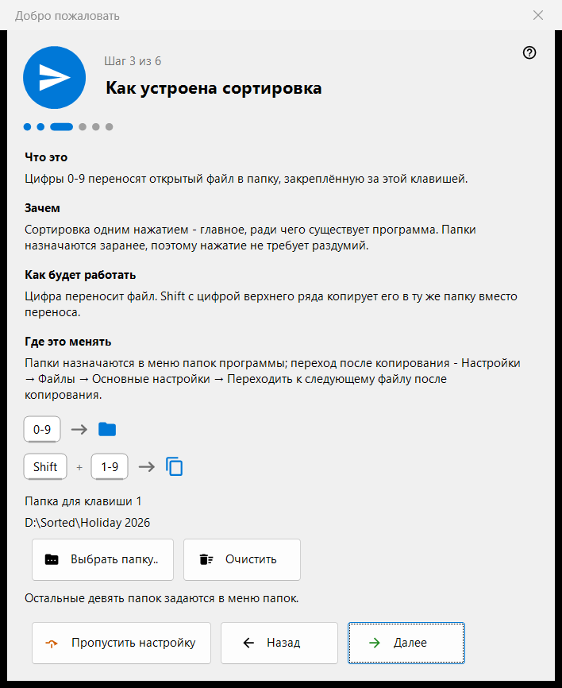
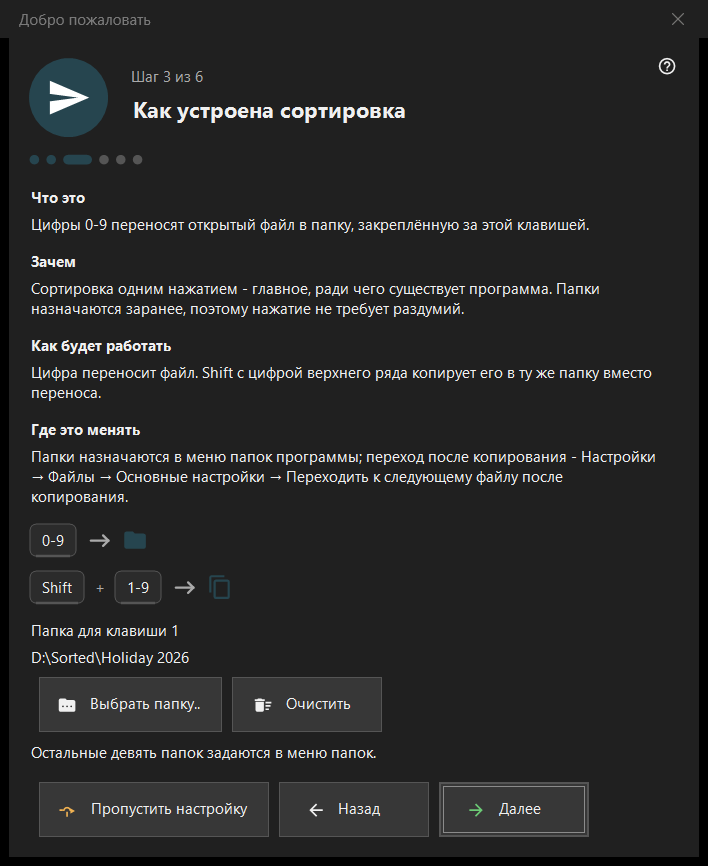

Добро пожаловать
Добро пожаловать
Назначение
Приветственные шаги за несколько минут настраивают основное: язык, внешний вид, папку для клавиши 1, удаление и сопоставление файлов. Они открываются при первом запуске, по кнопке «Первоначальная настройка» на пустом экране просмотра и по параметру «Показать приветственные шаги снова» на странице «Общие» настроек. Шаги есть только в 64-разрядной версии.


Порядок действий
- Выберите язык.
- Выберите фоновую схему и действие колеса.
- Выберите папку для клавиши 1.
- Прочитайте, как работает удаление.
- Задайте сопоставление файлов.
- Проверьте итог и нажмите «Готово». Кнопка «Далее» ведёт дальше, «Назад» возвращает, «Пропустить настройку» переходит к последнему шагу.
Элементы окна
Язык интерфейса
Окно меняет язык сразу, как предпросмотр; просмотрщик принимает его только после «Далее». Если закрыть окно без этого, язык просмотрщика остаётся прежним.
Внешний вид
Выберите фоновую схему области картинки (По углу, Чёрный, Белый, По краю, По верху, По низу) и действие колеса: либо оно масштабирует в точке курсора, а листают стрелками, либо листает файлы, а масштаб - Ctrl+колесо. Оба выбора можно изменить позже на странице «Изображения» настроек.
Как устроена сортировка
Цифры 0-9 переносят текущий файл в папку; Shift и цифра верхнего ряда копируют его. Папку для клавиши 1 выбирает кнопка «Выбрать папку..»; остальные девять задаются позже на странице «Получатели» настроек. Если папка исчезла, шаг сообщает: «Папка больше не доступна. Выберите другую.»
Безопасное удаление
Показывает, как работают Del (в Корзину) и Shift+Del (окончательно). Параметры удаления находятся на странице «Файлы» настроек.
Открывать картинки здесь
Позволяет открывать картинки и видео из Проводника этой программой. Шаг появляется, только если программа установлена не как пакет Microsoft Store; сопоставление действует для вашей учётной записи и не требует прав администратора.
Всё готово
В итоге указаны все настройки, их значения и места, где их можно изменить. Если на этом ПК установлены серверные компоненты, блок «Серверы на этом ПК» показывает каждый со статусом и кнопкой «Открыть менеджер»; если ничего не установлено, блок скрыт.
Части шага
У каждого шага четыре части: «Что это», «Зачем», «Как будет работать» и «Где это менять».